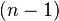
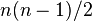
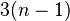
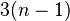
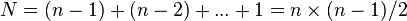
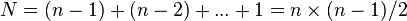
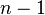
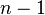

选择排序
|
|
| 分类 |
排序算法 |
| 数据结构 |
数组 |
| 最差时间复杂度 |
О(n²) |
| 最优时间复杂度 |
О(n²) |
| 平均时间复杂度 |
О(n²) |
| 最差空间复杂度 |
О(n) total, O(1) auxiliary |
|
|
选择排序（Selection sort）是一种简单直观的排序算法。它的工作原理如下。首先在未排序序列中找到最小（大）元素，存放到排序序列的起始位置，然后，再从剩余未排序元素中继续寻找最小（大）元素，然后放到已排序序列的末尾。以此类推，直到所有元素均排序完毕。
选择排序的主要优点与数据移动有关。如果某个元素位于正确的最终位置上，则它不会被移动。选择排序每次交换一对元素，它们当中至少有一个将被移到其最终位置上，因此对n个元素的表进行排序总共进行至多n-1次交换。在所有的完全依靠交换去移动元素的排序方法中，选择排序属于非常好的一种。
目录
[]
- 1 C语言实现
- 2 C++实现
- 3 C#语言实现
- 4 VB.net范例
- 5 Python语言实现
- 6 Java语言实现
- 7 复杂度分析
- 8 外部链接
C语言实现[]
void selection_sort(int arr[], int len) {
int i, j, min, temp;
for (i = 0; i < len - 1; i++) {
min = i;
for (j = i + 1; j < len; j++)
if (arr[min] > arr[j])
min = j;
if (min != i) {
temp = arr[min];
arr[min] = arr[i];
arr[i] = temp;
}
}
}
C++实现[]
template<typename T> //整數或浮點數皆可使用，若要使用物件（class）時必須設定大於（>）的運算子功能
void selection_sort(T arr[], int len) {
int i, j, min;
T temp;
for (i = 0; i < len - 1; i++) {
min = i;
for (j = i + 1; j < len; j++)
if (arr[min] > arr[j])
min = j;
if (min != i) {
temp = arr[min];
arr[min] = arr[i];
arr[i] = temp;
}
}
}
C#语言实现[]
static void selection_sort<T>(T[] arr) where T : System.IComparable<T>{//整數或浮點數皆可使用
int i, j, min, len = arr.Length;
T temp;
for (i = 0; i < len - 1; i++) {
min = i;
for (j = i + 1; j < len; j++)
if (arr[min].CompareTo(arr[j]) > 0)
min = j;
if (min != i) {
temp = arr[min];
arr[min] = arr[i];
arr[i] = temp;
}
}
}
VB.net范例[]
'進行排序前先建構兩數值交換的程式switch
Private Sub switch(ByRef a, ByRef b)
Dim c As Integer
c = a: a = b: b = c
End Sub
'選擇排序由小到大
Dim i, j, count As Integer
For i = 0 To UBound(b) - 2
For j = i + 1 To UBound(b)-1
If b(i) > b(j) Then
switch(b(i), b(j))
count += 1
end if
Next
Next
MsgBox("一共經過了" & count & "次的排序")
Python语言实现[]
def selection_sort(L):
N = len(L)
exchanges_count = 0
for i in range(N-1):
min_index = i
for j in range(i+1, N):
if L[min_index] > L[j]:
min_index = j
if min_index != i:
L[min_index], L[i] = L[i], L[min_index]
exchanges_count += 1
print('iteration #{}: {}'.format(i, L))
print('Total {} swappings'.format(exchanges_count))
return L
testlist = [17, 23, 20, 14, 12, 25, 1, 20, 81, 14, 11, 12]
print('Before selection sort: {}'.format(testlist))
print('After selection sort: {}'.format(selection_sort(testlist)))
Java语言实现[]
public void selectSort(Comparable[] array) {
System.out.println("===========Insert Sort Started===========");
Comparable temp;
//min存放最小元素的index
int min;
for (int index = 0; index < array.length - 1; index++) {
//假定第一个元素为最小元素
min = index;
//循环遍历元素，每遍历一个元素，与当前最小元素比较，若此元素比当前最小元素小，则将此元素置为最小元素
for (int time = index + 1; time < array.length; time++) {
if (array[time].compareTo(array[min]) < 0) {
min = time;
}
}
//遍历一遍，找到一个最小元素，把此最小元素的index与min交换位置
temp = array[index];
array[index] = array[min];
array[min] = temp;
}
System.out.println("The array after sorted....");
System.out.println(Arrays.toString(array));
System.out.println("============Insert Sort Ended============");
}
复杂度分析[]
选择排序的交换操作介于和次之间。选择排序的比较操作为次之间。选择排序的赋值操作介于 和次之间。
和次之间。
比较次数 ，比较次数与关键字的初始状态无关，总的比较次数。交换次数
，比较次数与关键字的初始状态无关，总的比较次数。交换次数 ，最好情况是，已经有序，交换0次；最坏情况是，逆序，交换次。交换次数比冒泡排序较少，由于交换所需CPU时间比比较所需的CPU时间多，
，最好情况是，已经有序，交换0次；最坏情况是，逆序，交换次。交换次数比冒泡排序较少，由于交换所需CPU时间比比较所需的CPU时间多， 值较小时，选择排序比冒泡排序快。
值较小时，选择排序比冒泡排序快。
原地操作几乎是选择排序的唯一优点，当方度（space complexity）要求较高时，可以考虑选择排序；实际适用的场合非常罕见。